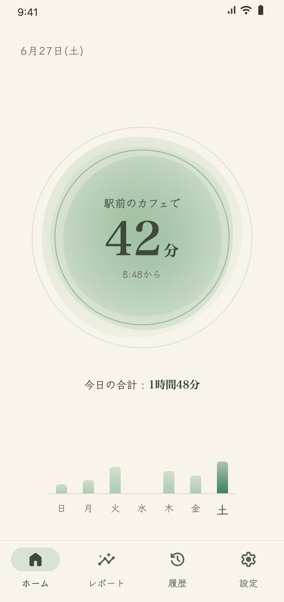
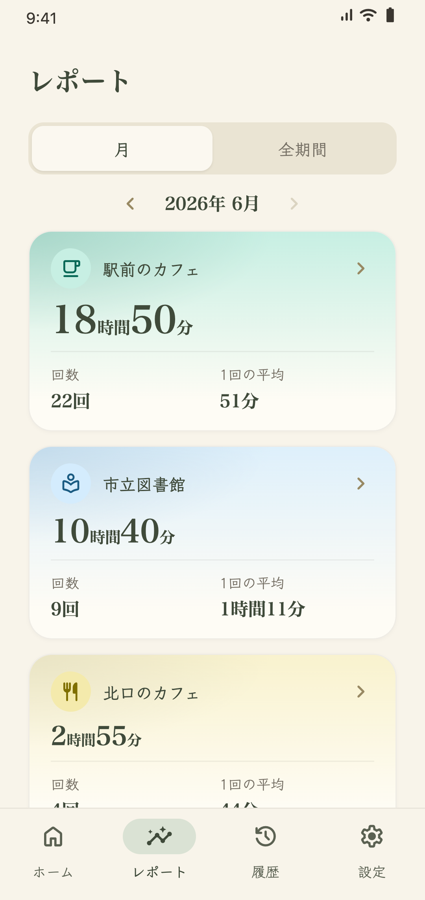
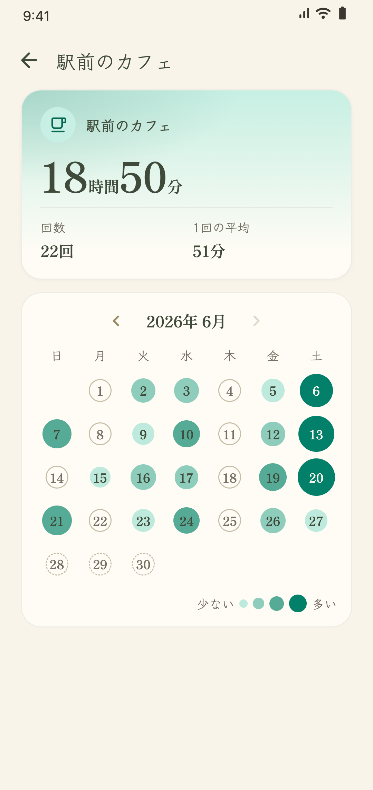
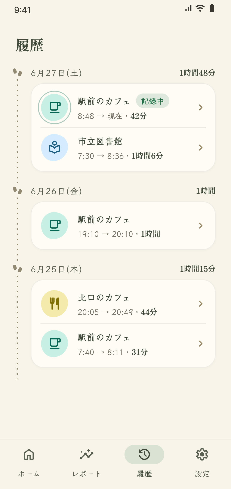

勉強・作業時間を場所で自動記録
いつもの場所に着くだけで、記録が始まる
カフェや図書館、コワーキングスペースなど、よく行く場所を登録しておくことで、その場所での滞在を自動で記録するアプリです。
現在はAndroidのみに対応しています。

特徴①
一度設定したら放置するだけ
場所を登録する
カフェや図書館など、よく行く場所を地図や検索から選んで登録します。
着いたら自動で記録
登録した場所に着くと記録が始まり、離れると終わります。アプリを開かなくても、スマホをしまったままで記録されます。
積み上げを振り返る
たまった記録は、レポートや履歴の画面でいつでも見られます。
特徴②
積み上げた時間が一目でわかる
場所ごと・日ごとに積み上げた時間を表示します。



特徴③
プライバシーに配慮した設計
位置情報を使うアプリだからこそ、何を記録して何を記録しないかをはっきりさせています。
記録するもの
- checkあなたが登録した場所の名前と座標
- checkその場所に着いた時刻と離れた時刻
記録しないもの
- close移動の経路
- close登録した場所以外での位置
- closeGPSによる常時の位置情報
アプリを閉じている間も記録するため、位置情報の「常に許可」をお願いしています。
詳しくはプライバシーポリシーをご覧ください。
こんな方に
- カフェや図書館に通って勉強や仕事をする方
- 作業場所ごとの稼働時間をざっくり把握したいフリーランス・在宅ワーカーの方
- 記録を自分でつけるのが続かなかった方
よくある質問
バッテリー消費はどれくらいありますか?expand_more
バッテリー消費はごくわずかです。GPSで常に位置を測り続ける方法と違い、OSのジオフェンス機能で「登録した場所に入った・出た」ことだけを検知することで、バッテリーへの負担を大幅に抑えています。
記録の時刻がずれることはありますか?expand_more
場所への出入りの検知には、数分ほどの遅れが出ることがあります。Comologは積み上げを手間なく、おおまかに把握するためのアプリなので、この遅れは補正していません。
細かい時刻の修正は、「履歴」画面からできます。
登録した場所の近くを通るだけでも記録されてしまうのでしょうか?expand_more
初期設定では、15分未満の滞在は記録しません。この時間は設定から変更できます。
場所を登録していなくても記録できますか?expand_more
登録していない場所でも、ホーム画面から手動で記録を始められます。
自宅でも使えますか?expand_more
自宅は生活の時間と区別できないため、場所を登録しての自動記録には向いていません。ホーム画面から手動で記録を始めれば、自宅での勉強や作業の時間も記録できます。
間違って記録されたときは?expand_more
「履歴」画面から、記録の編集や削除ができます。
記録を書き出せますか?expand_more
設定の「記録の管理」から、記録をCSVファイルとして書き出せます。
iPhoneでも使えますか?expand_more
現在はAndroidのみに対応しています。iOS版の公開を検討しています。公開したときにお知らせを受け取るには、こちらのフォームから登録してください。
Google Play で配信中
現在はAndroidのみに対応しています。